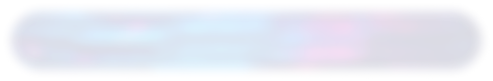
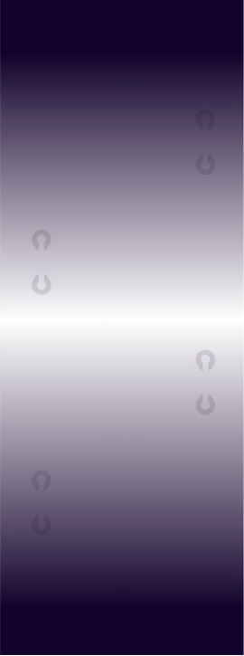
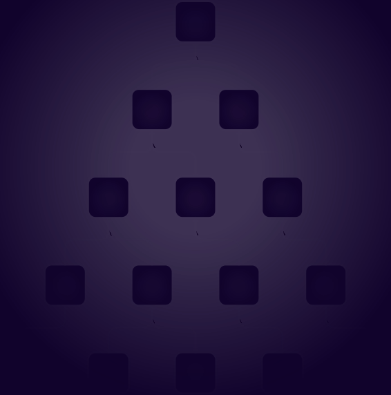

Build REST APIs With High Precision.
A TypeScript-first web framework for building the next generation of web apps.
Get StartedWrite Backend Code And Get The Client For Free.
Kinekt automatically derives the client with which you call your endpoint.
export const getUser = app.createEndpoint(
"GET /users/:id",
{
params: z.object({ id: z.string() }),
response: { 200: z.custom<User>() },
},
async ({ params }) => {
const user = await db.users.findOne(params.id);
return { statusCode: 200, body: user };
}
);
const user = await getUser({ params: { id: "some-id" } }).ok(200);

Fast
Kinekt is built from the ground up with performance in mind. It features a carefully crafted middleware engine which easily competes with other node-based web-frameworks, and uses a radix-tree for routing.
100% Type Safe
Kinekt takes full advantage of the TypeScript Compiler to write 100% type safe code.
// Type safety in pipelines
const pipeline = createPipeline(
...,
authenticate(handler), // <-- adding authenticate middleware
// with a handler callback
...
);
export const getUser = app.createEndpoint(
// ...
async ({ context }) => {
const session = context.session; // <-- the context now has a session
// property available which is
// determined by the handler that was
// defined.
const user = session.user;
// ...
}
);
// Type safety in endpoints
export const createUser = testPipeline.createEndpoint(
"POST /organization/:organizationId/users",
// ^---- by using a param segment, you are forced to
// use a 'params' schema containing
// 'organizationId' (see below).
// ^---- by using POST method here, you are forced to declare a body schema
// (see below).
{
params: z.object({ organizationId: z.string() }), // <- params schema
query: z.object({ private: zodBooleanFromString() }),
body: z.object({ email: z.string() }), // <- body schema
response: {
// You must explicitly declare which bodies are returned for which status
// codes.
200: z.custom<User>(),
409: z.custom<{ message: string }>(),
},
},
async ({ params, query, body, context }) => {
// You must return bodies and status codes as declared in the response
// schemas.
if (body.email === "existing@email.com") {
return {
statusCode: 409,
body: { message: "User with this email already exists" },
};
}
return {
statusCode: 200,
body: {
id: "some-id",
email: body.email,
organizationId: params.organizationId,
private: query.private,
},
};
}
);